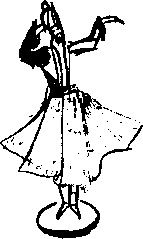

Bir saat sonra o da duşunu almış, gözkapakları biraz daha açılmış, saçlarını toplayarak at kuyruğu yapmış, kalın bej bir İrlanda balıkçı kazağı, turuncu, yani Yaşar Hanım’a göre yine sarı, deri bir mont, blucin ve yine turuncu botlar giymiş olarak geldi. Dudaklarına hafif bir ruj bile sürmüş olabilirdi veya bir koruyucu. Ferid “kadınlar” diye düşündü. Daha kendisinin topyekûn olarak bir başkasının muhayyilesinin “enam”ından biri olup olmadığını bile bilmiyor, ama çatlamasın diye dudaklarına bir şeyler sürmekten de vazgeçmiyordu!
Ferid, Duvduvani’yi patlatmaktan acayip zevk aldığı o kabarcıklı naylonlardan birine sarmış, itina ile omuz çantasına yerleştirmiş, gerçek –yani ayaklı– Duvduvani Efendi’ye –ki daha kısa oluyor diye dün ikisi de ona Fendi demeye başlamışlardı– mamasını vermiş, kumu kontrol etmiş, kirli olmamasına şaşırmış, “ulan bu kerata benim halılarıma mı ediyor” diye düşünmüş, sonra hayvanın henüz sokaktan geldiği, bir yerlere bir şey edebilme noktasına gelebilmesi için daha birkaç kutu Fiskas yemesi gerektiği sonucuna ulaşmıştı. Kedinin mamaya atılışında hâlâ sokak yabaniliği ve açlığı vardı, yemyeşil bıçak gibi gözlerinde ise minnet denen duygunun “nâm ü nişânesi” yoktu.
“Bir taksi çağırıyorum” dedi Suat Ferid.
“Niçin? Benim arabamla gitsek daha iyi olmaz mı?” dedi Anette.
Tabii ya. Herkes kendisi mi? Tabii ki arabası olacak. Telefonu yerine koydu. Çıktılar.
Suat Ferid otoparktaki arabaları gözden geçirirken hangisi bu ufak tefek Belçikalının olabilir oyununu oynadı. Herhalde şu minik Hiai. İster istemez o tarafa yönelirken Anette kolundan çekiştirdi. Yerden yüksekliği, Suad Ferid’in –annesinin deyimiyle– Macar kadanalarını geçen boyunu da aşan bir dört çeker önündeydiler. Bunu daha önce görmüş, bu kurşuni tank mukallidi aletin kim bilir hangi görmemişin karısına ait olduğu konusunda spekülasyonlar yapmıştı. Yükselmekte olan Türk burcuvazisinden kaçamak bir zihni özür diledi.
“İkinci köprüden gidelim" dedi. Bu şaşkınlıkla “Fındıkzade" de diyebilirdi. Tam olarak Ümraniye’de değil Modelko’da idi Sahaf Hami. Çünkü hayatını birtakım suntalara gül veya ceviz ağacı kaplaması yapmakla kazanan “taife-i neccâran”dandı. Yesu bar Nagara’dan beri muteber bir meslek... Ona gidiyordu çünkü eski kitaplar hakkında dehşetli bilgisi olmaktan öte, İstanbul’un yarı resmi sahaf ağının dışında idi. Şimdi Şakir veya Selami’ye düşüp ortalığı velveleye vermenin âlemi yoktu.
Anette’e gelince: Arabasını son derece hoyrat kullanıyordu. Böcek ebadında, kötü yapılmış, konturları köşe köşe yerli taksileri sıkıştırmak ve onlara sol eli ile ters zafer işareti yapmaktan herhalde hassaten zevk alıyor olmalıydı. Suat Ferid gayr-i ihtiyârî,
“Brüksel de aynen böyle yapıyor bize, aynen. Kendi çıtı pıtı kıçlarını güvene almışlar ya... Tabii suç onlarda değil... Suç koskoca evlad-ı Osmaniyi ‘yayak’ yürütenlerde... ah ‘Asya-ı Vustâ’ ah..." diye dertlenmiş, köprüden geçerken Boğaziçi’nin tarifsiz güzelliği ile ilgilenmek yerine "uyan ey yareli şîr-i jiyân daldığın hâb-ı gafletten gezdiğin nâzende sahralar kilâb-ı zulme kaldı" dizelerini okuyor, yanı başındaki nefis ufak “Avrupa"dan da, uzaktaki büyüğünden de özgürce nefret ediyordu.
Elinden gelse hızla akan arabadan inip, kendilerine kendi ülkelerinde böylesi terbiyesizce davranılan şoförlerin tek tek ellerini öpüp özür dilerdi... Çok eskiden beri böyle tuhaf bir adalet anlayışı vardı... Çaresiz... Birden gözleri karardı... Ne çaresizi salak Utku, ne çaresizliği? Her şey ellerindeydi! İstese bir gece oturur, tarih-i kadimi de cedid-i de yeniden yazar, yanındaki ufak Avrupa’yı da, büyüğünü de, ağababalarını da “rikâb-ı Hümâyûnun azat kabul etmez bendegânı” haline getirebilirdi... Veya isterse tüm bu ulusu Zoltaire’in, Fiderot’nun, Cousseau’nun en radikal tilmizleri yapar, ailesinin bir müddettir, iki asırdan pek emin değildi, Faik Ladin’in kurusıkısı olabilirdi, övünç duyduğu ateist şarkılar söyleme işini günde üç vakit selâtin camilerinde cemaat ile eda ettirirdi!
Titremeye başladı... Tevekkelli değil Anette “ben de geliyorum” demişti üzerine basarak. Tabii hiç bırakır mısınız adamı, azıcık sıkıya gelince... ki kızın geldiği sıkı hiç de öyle az buz değildi... Bu güç, şeytanın bu iğvası Suat Ferid’i zangır zangır titretmeye başlamıştı... Anette bunu soğuğa verip ısıyı artırdı.
Modelko’nun arka sokaklarındaki atölyelerden birinde, bekleme odamsı hale getirilmiş olan ön tarafta oturmuş, Hami’yi beklerlerken ikram edilen çayları yudumluyorlardı. Hiç konuşmadılar. “Şimdi gelir abi” denmişti, o şimdiyi elli dakikadır bekliyorlardı.
Sonunda Hami göründü. Anette’in omuzlarına ancak gelir, siyah çember sakallı, parlak siyah kirpi saçlı, yemyeşil gözlü bir adamdı. Bütün iyi terbiye almış Türk erkekleri gibi elini önce Suat’a uzattı, sarılıp öpüştüler.
“Belki benim elimi sıkmaz bile" diye düşünürken Hami’nin, ayakları üzerinde yükselerek, kendisini iki omzundan sağlamca kavrayıp, yanak mı, dudaklarının kenarı mı, pek belli olmayan bir noktadan öpüvermesi Anette’i aptallaştırmıştı. Suni deri kaplı sandalyeye adeta çökerek oturdu. Başka zaman olsa Suat da bu işe şaşırır veya “ulan bu Peynircizadelerin kaderi mi yanında yörelerindeki kadınlara böylesi yazılması bu milletin?" diye kızardı. İkisini de yapmadı. Çantasını işaret etti.
Hami alışkanlıkla asma katın merdivenlerine yöneldi, yine iyi yetişmiş bir Türk erkeğinin yapacağı gibi öne Anette’in geçmesini bekledi, kızın demir merdivenleri tırmanırken ritmik hareketler yapan düzgün kalçalarını dikizleme işini de Suat’a bırakmadan hemen ardından kendini merdivene attı.
Suat iyice kızıyor “ulan şunu kurbağaya çevirsem mi kendi yazıhanesinde" diye düşünüyordu. “Sakallarını da aynen bırakayım ki eşi dostu tanısın keratayı" diye bir ek yaptı düşüncesine.
Alüminyum doğramadan yapılmış o sakil, yazıhanemsi kutuya girdiler. Ferid her defasında içine zor sığdığı, sırf Hami’nin ufak formika masası yüzünden yazıhane sıfatını kazanmış bu cendereden nefret ederdi. Bu sefer kapısını sıkıca kapadı. Hami, masasının arkasına kurulup oturdu. Anette, gülümsemezlik edemedi. Çünkü alüminyum duvar üzerindeki kalpaklı Atatürk resminin aynısı okulda Müdür Bey’in makamında da bulunmaktaydı. On yılda bu memleketin garip âdetlerine hâlâ alışamamıştı; “bir marangoz atölyesinde cumhuriyetlerinin kurucusunun resmini ve daha başka resmi parafemelyayı niye sergiliyorlar?” diye sordu kendine. Çünkü masanın üstünde de enine, elips olarak kesilmiş ve daha küçük başka bir ağaç dilimine teğet olacak şekilde raptedilerek ayakta durması sağlanmış bir ıhlamur kütüğü diliminin üzerine havya ile yakılarak, cafcaflı, neredeyse okunmaz derecede Arap harflerine benzetilerek yazılmış bir Hami Soyarslan yazısı vardı. Bunun aynısı da, tabii ismi değişik olarak, müdür yardımcısının masasında yaşıyordu. Hemen yanında ise pis, beyaz bir plastik düğme. Hami dehşetli bir çalımla bu düğmeye basarken,
“Ne içeriz, sıcak-soğuk?" diye sordu.
Suat Ferid düşünmeden,
“Çay iyi... iyi” dedi.
Hami üst üste düğmeye bastı. Birazdan çıraklardan biri içinde üç çay olan bir tepsiyle içeri girdi. Bardakların üzerinde minik demir tabakçıklar vardı. Suat “bunu nerede gördüm daha önce? Bu arada Hami kurbağasına bak, Mors alfabesi yapmış kendisine...” dedi kendi kendine.
Hami ellerini çenesinin altında birleştirip öne doğru eğilerek, filmlerden gördüğü gibi ve yardımsever bir sesle,
“Sizin için ne yapabilirim?” diye sordu.
Suat Ferid cevap yerine kitabı çıkararak masanın üstüne koydu. Hami alışkın hareketlerle kitabı naylondan çıkardı. İlk sayfasını açtı ve neredeyse elektrik şoku yemiş gibi elinden bırakıverdi.
“Ne oldu?”
“Hiç... hiç! Vakıf bu...”
“Yahu, vakıfsa vakıf, daha önce hiç mi vakıf kitap tutmadın? Bırak şimdi!” diye çıkıştı Suat Ferid.
Bıraktı Hami. Tuhaf, uğultulu bir ton ile,
“Demek buldun” dedi.
“Neyi buldum?”
“Asıl sen bırak, Kubad Efendi’yi buldun... Belliydi... Çok çabalıyordun...”
“Çabalıyor muydum?”
“Tabii! O yazdığın tarihi roman kılıklı şey ne idi? Bulmak için bir çaba değil miydi?”
Suat böyle düşünmemişti. Saldırıya geçti:
“Sen nasıl anladın Kubad Efendi olduğunu?”
“Bir gören bir daha unutur mu a şaşkın?” diye soruyla cevap verdi Hami.
“Sen... sen... Bunu daha önce gördün mü?”
Hami ciddileşmişti
“Hepimiz gibi tabii, şimdi biraz daha kalınlaşmış, o da gayet normal.”
“Hami adamı deli etme... Ne demek hepimiz? Kim... Kimler?"
“Suat Bey, asıl siz salaklaşmayın lütfen... Bu millet o kadar kitabı, araştırmayı, filmi neresinden uydurdu zannediyorsunuz?”
Suat Ferid günlerdir, aylardır böyle bir çıngıraklı kahkaha atmamıştı:
“Hami hiç güleceğim yoktu, o paçavralar mı? Hah... hah... hah...”
Hami biraz alıngan:
“Yazana göre değişiyor tabii... Ama aralarında fena olmayanlar da vardır... Mesela Kubad Et Beni Abad macerası hiç de fena değildir. 1975’te film bile oldu.”
Suat Ferid birden ayıldı, kahkahalardan boğulurken,
“Tuh ulan, Allah belanı versin, onu sen yazdın değil mi?" dedi. Hami’nin yüzüne hafif bir pembelik gelmişti:
“Eh, naçizane efendim tabii başka bir ad altında...”
Suat’ın gülmeyi kesmediğini görünce,
“Sizi de göreceğiz Suat Ferid Bey" deme lüzumunu hissetti. Suat sustu. Hami saldırıyı sürdürdü, Anette’i göstererek,
“İlk yazdığın şeye bakılırsa, pek bir yetenek vaat etmiyorsun, kadın dediğin biraz daha etli butlu olacak...” dedi.
O zamana kadar sessiz kalan Anette,
“Bakın monsieur, beni kimse yazmadı, tamam mı?" diye atıldı. Hami son derece saygılı ve manidar bir cevap verdi:
“Tabii bayan... Tabii! Biz bu tip konulan netâyic-ül tahayyülat ile tartışmayız bile... Haklısınız... haklı olmayıp ne yapacaksınız?”
Anette üstelemedi. Korkuyordu.
Suat Ferid de gereksiz tartışmalara girmek istemedi. “Çok gerekiyorsa Hami’yi tamamen kazırım bu kâinattan, olur biter" diye düşündü. Birkaç saattir böylesi bir güç içine yerleşmiş, çöreklenmiş, sinmiş kalmıştı.
“Hami Efendi bizim aslında bir iki teknik sorumuz olacaktı" diye pestenkerani bir giriş yaptı.
“Suat Ferid Bey buyurun, sizi dinliyorum.”
“Şey... Su damgalan koleksiyonu yaptığınızı biliyorum, şuradaki desenlere bir göz...”
Hami kesti:
“Suat Ferid Bey hâlâ ortada bir sahtekârlık var mı diye düşünüyorsunuz? Şunu unutmayın, Kubad Efendi’yi bu âlemin terazisinde tartarak bir yere ulaşamazsınız, yapmayın. Olduğu gibi kabul edin, bakın o hepimizi olduğumuz, hatta olmak ve oldurmak istediğimiz gibi kabul etti.”
“Peki Efendi hakkında söyleyeceğiniz bir şey yok mu?”
“Eh... Bu şartlar altında pek yok... Siz ne yazarsanız haliyle o olacak, onu öğrenmiş olacaksınız. Benim Efendim bana, senin Efendin sana...”
Suat başka bir şey denedi:
“Peki Hami Efendi, erken dönemlerde yazılmış Kubad Efendi –Duvduvani veya Tasviri’yi özellikle kullanmamıştı– edebiyatı veya bu tür kitaplar üzerine bir bilginiz var mı?"
Hami birden anlayışla,
“Haa, orası başka mesele, sanat bu. Herkes etkilenmek, yazmaya girişmeden önce selefiyyun’un ne yaptığını görmek ister, mimesis en önemli kaynağıdır sanatçının...”
“Mimesis” sözü Suat Ferid’in gönlünü bulandırdı: “Bu hacıyatmaz da mı benim eserim? Yazının yabanın Hami’si mimesisi nereden bilsin?” Beriki devam ediyordu:
“...Ayrıca bu işlere mürşidsiz, şeyhsiz girilmez, ölü veya diri fark etmez. Kimin ki şeyhi yoktur, şeytandır onun şeyhi, meğerki Hak onara işini! Bu erken literatürü en iyi bilenlerden biri, belki de birincisi Testiyye tarîkinin şeyhi Osman Hulûsi Beyefendi Ağa’dır. Lûtf ve inayet ederse bir şeyler öğrenirsin.”
Suat Ferid atıldı:
“Hami Efendi, tam aradığım zat...”
“Suat Ferid Bey, şeyh hazretlerinin kendileri Ördekkasap mahallesinde yaşar. Çocuklara bile sorsan dükkânının yerini gösterirler."
Hami’ye teşekkür ederek çıktılar. Suat Ferid, arabaya doğru yürürlerken ayakkabısının bağlarını sıkılıyormuş bahanesi ile biraz geride kaldı. Anette’in vücuduna utanmadan baktı. Yoo, her şeyi yerli yerindeydi işte, “et but”muş salak fetişist... Madem öyle yazmakla oluyor sen kendine biraz boy pos ile ceviz içi kadar olsun akıl yazaydın ya...”
Bu düşüncesi yine iliklerine kadar titretti onu... İlk ve ortaokul yıllarında sınıfın daima en sıska, en ufak çocuğu idi. Sonra birden boy atmış, bugünkü haşmetli 1.94 metreye lise ikide ulaşarak zavallı anne babasını ve herkesi şaşkınlıklara dûçâr etmişti... Yani olayı böyle hatırlıyordu. Kuşkulara gark olmasının nedeni ise, boyunun uzamasını nasıl çılgınca istediğini de hatırlıyor olmasıydı. Hami’ye “yapsaydı” dediğini acaba kendisi mi yapmıştı? Ne zaman? Eğer doğru ise daha başka ne haltlar yemişti? Sarhoşluğu sırasında ne yaptığını sonradan hatırlamayan biri bile kendisinden kat be kat daha iyi durumdaydı. Öyle biri hiç olmazsa ayıldıktan sonra, ne zaman içmeye başladığını hatırlardı. Kendisi sarhoşluğundan önce yaptığı şeyleri çok iyi “hatırlamasına” rağmen bu sarhoşluk halinin ne zaman başladığım bilmiyor, anı diye saklamaya layık gördüğü ne varsa hepsinin yok hükmünde olması veya daha kötüsü sonradan inşa edilmiş olmaları ihtimallerini düşününce, içinde dehşetli bir huzursuzluk hissediyordu. Yüreğinde değirmen taşı kadar büyük bir ağırlıkla Anette’in yanına oturdu.
Bu sefer birinci köprüden geçerlerken son iki üç gündür ne yaptığını en ince ayrıntılara kadar “hatırlamaya" çalıştı. Evet, oldukça sağlam bir “hikâye” çıkıyordu ortaya. Yine de emin olmak gibi bir lüksü kalmamıştı artık. Anette’in suskunluğu bile başlı başına bir kuşku konusu, bir sebeb-i müstakildi. “Oldum olası" konuşmalarıyla düşüncelerini bölen kadınlardan hazzetmezdi. İlk ve ikinci karılarından bu yüzden ayrılmıştı. Şimdi bu “yabancı” kızın, yanında böyle mezar taşı gibi sessiz ve sâmit kalması bir tesadüf müydü? İyi, âlâ, madem öyle “oldum olası” gibi bir mefhuma nasıl sahip olabiliyordu ki? Sabah evden çıkarken Anette’in kuşkuları ile dalga geçme hakkını nasıl olup da kendisinde görebildiğine şaşırdı. Anette’i ve diğerlerini, aileden ateist Peynirci sülalesini ve her şeyi o yazmışsa, sadece yanında araba kullanan bu insan ile ölmüş ve yaşayan başka insanlarınkini değil, kendi hayatını ve kimliğini de hamur yoğurur gibi yoğurmuş, şekillendirmişti. Ağzından inler gibi,
“Anette ben kimim?" kelimeleri döküldü. Kızın buna cevabı,
“Ördekkasap nerede?" oldu.
Ördekkasap’ın sur içinde bir yerlerde olduğunu biliyordu. En elverişlisi olduğuna pek emin değilse de Karaköy-Eminönü-Saraybumu sahil güzergâhını tarif etti. Bir yerden sur içine girmeleri, sonra da sormaları gerekiyordu.
Sora sora öğlen saat bir gibi hem mahalleyi hem de Osman Hulûsi Beyefendi Ağa’nın dükkânını buldular. Üçer dörder katlı apartmanların arasına sıkışmış, iki katlı bir ahşap evin alt katındaydı dükkân. Yere kadar inen bir camın ardında, üzerine mavi muşamba örtülmüş bir seki üzerinde bir su testisi duruyordu. Suat Ferid, “herhalde tarîkin simgesi olacak” diye düşündü.
Zil yoktu. Demir tokmağı bir iki kez vurdu. Kimse yoktu. Aranırken, kapı kolunun biraz üzerinde bir ip düğümü gördü. “Aha” diyerek düğümü çekmeye başladı. Dışarıya yarım metrelik bir sicim çıkmışken kapının arkasındaki demir kolçağın da kalktığını duydu. İterek açtı.
Çekinerek girdiler. Zemini sıkıştırılmış topraktan dar bir sofada yürüdüler. Dışarıdan görünen iki kat, evin yalnızca bir cephesini teşkil ediyordu. Büyük, dikdörtgen biçimli, ağaçlı bir avluya çıkınca bunu anladılar. Apartmanların diğer üç yandan sıkıştırması, bilmeyen gözlerden evin derinliğini tamamen saklıyordu. Ferid başını kaldırıp apartmanlara baktı. Evin avlusunu gören cephelerinde küçük banyo pencereleri bile yoktu. Her üç apartman da bu cephelerini siyah zift ile sıvamıştı. İlerlediler. Girdikleri koridorun tam karşısına isabet eden bir kapıyı tıklattılar. Esmer, siyah kısa sakallı, sıvalı beyaz kolları eski kayık küreklerinin sap kısımları kadar şişkin bir adam kapıyı açtı ve
“Beyefendi Ağa sizleri bekliyor Suat Ferid Bey” diyerek misafirleri içeri aldı. Adamın öne düşmesi ile üst kata çıktılar. Geniş bir odaya girdiler.
Avluya bakan tahtaboşun girintisinde bir adam, sırtı pencereye dönük bir koltuğun üzerinde, sağ omzunda kapkara bir karga tünemiş olduğu halde, neredeyse sabah Anette’in oturduğu tarzda ama mükemmel bir bağdaş kurmuş, her iki bileğini dizlerinin üstünden gevşek bir tarzda sarkıtmış, oturuyordu. Karşısında benzer koltuklar vardı. Hiç ses çıkarmadan oturdular.
Osman Hulûsi Beyefendi Ağa öne eğmiş olduğu başını kaldırdı:
“Hoş geldiniz efendim fakirhanemize şeref verdiniz."
Anette’in şimdiye kadar gördüğü en yakışıklı erkek başıydı bu. Kısa süt beyaz saçları, kısa beyaz sakalları, çok hafif şahin gagası biçiminde muhteşem bir burnu, hafif çıkık, biçimli elmacık kemikleri, derin çukurlara gömülmüş yumuşak bal rengi gözleri, beyaz, öne düşük kaşları, açık bir alnı vardı. Çenesinin gerçek biçimini sakalları gizliyordu. Yine de yuvarlak olması hayli zor bir çeneydi bu.
Suat Ferid,
“Hoş gördük efendim” diye kısaca cevap verdi.
“Hami Bey geleceğinizi telefonla pek geç bildirdi, bir şey hazırlatamadım, kusura bakmayın... Ha, kızımız Türkçe biliyorlar mı?”
“Efendim, lütfen siz bizim kabalığımızı hoş görün, böyle sellemehüssellem geldik affınızı istirham ederim, evet biraz biliyor."
Bu kısa seremoniden sonra Osman Hulûsi Bey,
“Demek nöbet size değdi, beklediğimden çok genç buldum sizi” dedi.
Ferid sanki kendisine “altından kalkabilecek misin, yeterince kalp ve zihin kuvvetine sahip misin?” diye soruluyormuş gibi hissetti. “Değilim, alın size vereyim” gibisinden bir cevap vermek isterdi. Onun yerine,
“Daha mı yaşlı bekliyordunuz efendim?” diye karşı soru sordu.
“Ah, evet, ‘Selanik 1908’ romanının o çok hassas ve başarılı yazarının biraz daha yaşlı olmasını beklerdim.”
“Efendim mahcub ediyor, teveccüh buyuruyorsunuz, öylesine bir kalem denemesi idi" dedi Ferid aceleyle.
Beş sene önce çıkan romanının adını gerçekten de bu şekilde düşünmüş, sonra Selanik sözünün belki “yürekler Selanik" sözündeki gibi sağa sola çekilmesi ihtimalinden dolayı vazgeçmiş, Özgürlük Güneşi Yakar ismiyle çıkarmıştı. Hatta bunun da iyice gülünesi-acıklı bir öyküsü vardı. Kitabın ismini kendi kafasına göre algılayarak, özgürlük güneşinin zararları konusunda yapılmış samimi bir uyarı zanneden, fakat kitabın içine bakmak zahmetine katlanmayan işgüzar bir bürokrat sayesinde Ulusal Rehabitasyon ve Rehabilitasyon Bakanlığı, dağıtıcı firma aracılığıyla romandan 250.000 kopya ısmarlamış, bu kopyaları bütün okullara, yurtiçi ve dışındaki devâir-i devlete, muhtarlık ve belediyelere dağıtmıştı. Sonra da uzun bir davanın konusu olmuştu kitap.
Aslında kitabın içinde muzır olabilecek hiçbir şey yoktu, ne siyasi bir yargı veya istek ne de tek bir müstehcen sahne... Olay gayet basitti; bütün bir 1908 yılı boyunca Selanik’te Jön Türk İIhami Ihap Bey ile Yahudi kızı Linet arasında geçen masum bir aşk macerasından ibaretti. İkisi sonunda evleniyor, balayında Marsilya’ya gidiyor, insanların bermudalarını, gırtlağa kadar çıkan mayolarını çekmiş, kadın erkek, maaile deniz hamamı sefası yaptıklarını görünce bu özgürlüğün tadını çıkarmaya karar veriyorlardı. Güneşte ne kadar kalınır, denize nasıl girilir bilmedikleri için vücutlarının açık olan her tarafını fena halde yakmaları ve akşam otelde birbirlerinin vücutlarına taa Selanik’ten testi ile getirdikleri meşhur Kocacık yoğurdunu sürmeleri ile roman bitiyordu.
Suat Ferid bunu hatırlayınca hafifçe gülümsedi, Anette’e göre Osman Hulûsi Bey de aynen öyle gülümsüyormuş. Neler yazılıp, söylenmemişti bu roman üzerine, neler? Kimine göre bu apaçık bir alegoriydi. Burada özgürlüğü bulamayan insancıklar Batı’ya yöneliyorlardı. Kitabın adını telefonla sekreterinden öğrenen ve her zamanki gibi okumadan eleştiri yazısı hazırlayan üstadiyelerden biri fena çuvallamış, durduk yerde Suat Ferid’i Lemmingroad mukallidi olmak ile suçlamış, sonra pek fena madara olmuştu. Çünkü kadının iki satırda bir yaptığı tekrarlardan romanın adını “Özgürlük Güneşi de Yakar” diye anladığı anlaşılıyordu. Ferid eleştirmen hanımın normalden biraz irice olduğu konusunda takıntılı olduğunu bildiği –bu kadarını da sormayın– mabadı ile alay ederek,
“Ne olurdu Allah sana pamuk balyası kılığında bir kıç vereceğine fındık içi kadar beyin vereydi? Gelecek romanımda görüşürüz Filiz Hanım” diye sunturlu bir intikam yemini etmişti. Yine de bu damga üzerinden silinmediği gibi, gazetelerde köşe yazarlarının diline kadar düşmüştü. Artık herkes meşrebine göre ya “Türk Lemmingroad’u, yetenekli yazar” ya da “Garp mukallidi, ayaklarının üzerine duramayan Türk romanının yeni bir temsilcisi” parçasını bildiğince çalıyordu. Her eleştiri yazısı, her tanıtma paneli, kitabı kılıktan kılığa sokuyor, o kalıptan berikine döküyordu. En komiği, bir eleştiri yazısından sonra kitabın savcı tarafından müstehcen bulunup yasaklanması istemi ile dava açılması olmuştu. O ana kadar sadece 250.345 nüsha satan kitaba talep birden patlamıştı: Daha dava sürerken, yakında yasaklanır korkusu ile herkes ikişer üçer almış, on sekiz resmi, en az bir o kadar da korsan baskısı yapılmıştı. Üç ay kadar sürünen davanın düşmesi satışları biraz azaltmıştı ama burada da Ferid’in reklamcı zekâsı işin içine girmişti: Kitabın satışta olan versiyonunun erkek-kitap olduğu, şu anda ise dişi-kitabı baskıya hazırladığı bilgisini gerekli yerlere uçurmuştu, böylece yeni baskılardan birini, üzerinde kırmızı bir bantla “dişi-kitap” olarak lanse etmişler, bandın içine eşşek kadar harflerle “dişi-kitabın" aynen “erkek-kitap” gibi olduğu, fakat tek, evet tek bir kelimenin farklı olduğunu yazmışlardı. Bu da “Karıcık" kelimesi idi. Kapanış sahnesinde yanık zavallılar birbirlerinin vücutlarına “Karıcık” yoğurdu sürüyorlardı!
Zaten kitaba müstehcen dedirten sahne de bu Kocacık/Karıcık yoğurdu sürülmesi sahnesi idi. Suat Ferid’in son derece yavan, tatsız tuzsuz bir üslupla anlattığı bu sahne, memleketin en saygın eleştirmeni tarafından “Türk edebiyatında evlilik içi aşkı anlatan en erotik satırlar” unvanına layık görülmüş, bu da kitabı mahkemelik etmişti. Bu sahnede İlhami Ihap ah-of diye inlerken birden “Linet, Linet ne yapıyorsun? Sürme, orası yanmadı!” diye hem sahneyi hem kitabı bitiren bir çığlık atıyordu. Dava ise tam anlamıyla bir komediydi, bazı dedikodulara göre yargıçlar mahkemeyi bilerek uzatıyorlar, hayatlarında eğlenmedikleri kadar eğleniyorlardı.
Suat Ferid biraz boynunu bükerek,
“Efendim biliyorsunuz, asla anladıkları nahiyeyi ve ameliyeyi kastetmemiştim” dedi. Kitabın, hiç kimseye söylemediği orijinal adını bilen Şeyh’e yalan söylemeyi veya gerçeği saklamayı tabii ki düşünmüyordu. Osman Hulûsi Bey yumuşaklıkla,
“Biliyorum ama bir kez yazdıktan sonra satırlarınız, kelimeleriniz artık sizin olmaktan çıkar, müddet-i medide sonra okursanız siz de farklı anlar, farklı okursunuz” dedi.
Doğruydu tabii. Sonradan kendisi de o meşhur son satırı okumuş, hem eleştirmene hem savcıya hak vermiş, dahası –komik ama– kitabın yazılmayan bu son sahnesi ile acayip heyecanlanmış, yüreğinin delice attığını fark etmiş, Linet diye muhayyel bir tipe nerede ise âşık olmuştu. Niye yaşlı başlı amcaların, teyzelerin bile bakkallara, “geldi mi Kocacık/Karıcık yoğurdu evladım?” diye sorduklarını hafif anlar gibiydi artık.
Bu dünyada aşk gerekti. Yavan bir aşktan sıkıcılığa giden yol da çok kısaydı. İnsanlar bu yolu uzatmak için ceketlerini bile satmaya razıydılar. Bilmeden bir hâzineye dalmıştı. Sahi ya, memleketin birtakım müteşebbis evladı da duruma hemen aymış, toprak testi içine mayalanmış, artık cinsiyete göre mavi veya pembe bir zemin üzerine adını beyaz bir yazıyla yazdıkları Selanik’in meşhur Kocacık/Karıcık yoğurdunu piyasaya sürmüşlerdi bile. Bazı ileri fikirli ailelerin iki testi birden almak için azami dikkat gösterdikleri de oluyordu. Bazı eleştirmenler ise düpedüz düşman bir tavırla, tüm sahnenin Vitrioli’nin ünlü Double-whipped in New York adlı filminden kaldırma olduğunu iddia ediyor, sarkazmın doruklarında, kremayı bizden bir şeyle, yoğurtla ikame etmek ferasetini gösterdiği için Suat Ferid’i kutluyorlardı.
En tuhaf tepkilerden birini ise Üç bine Giderken dergisi vermişti, bütün hadisenin, satışların gerilediğini gören Yoğurt Üreticileri (Sahte) Birliği tarafından kotarıldığını iddia ediyorlar, iddialarım ise ne hikmetse bir yerlerden ele geçirdikleri uzun bant deşifreleri ile destekliyorlardı. Kanıtlar son derece açıktı. Suat Ferid’in memleketin en saygın yoğurt fabrikatörü Hasmim Samanla el sıkışırken çekilmiş bir resmi de yirmi küsur sayfalık (on sekizi bant çözümü) yazıyı tamamlıyordu. Bant çözümleri de, resim de doğruydu. Yalnız bu sosyal mühendislik harikası olayla ilgili konuşmalar ne zaman yapılmış, resim nerede çekilmiş gibi sorular meskût geçilmişti.
Ferid fotoğrafın çekilişini gün gibi hatırlıyordu. TUYAP’ta kitabım imzalarken çekilen resmin orijinalinde, arka planda hecin devesi iriliğinde harfler ile yayınevinin adı görünüyor, el sıkışma merasimi ise üzerine kitaplar yığılı imza masasının başında geçiyordu. Tabii bu resim baskıya hazırlanırken “etrâf ü eknâf”taki lüzumsuz detay ayıklanmış, düpedüz makasla temizlenmiş, öyle basılmıştı. Hasmim Bey’in “yazdığınız her şeyi okudum... Ben çok okurum... çok,” deyişini nefesindeki sarımsak kokusuyla birlikte hatırlıyordu Suat Ferid.
Bant çözümlerini dikkatle okuyan herkes, tüm bu konuşmaların kitap bir bestseller olduktan sonra yapıldığını rahatlıkla anlayabilirdi.
“Altı yüz otuz bin satan bir kitap, bu memleket nüfusunun hepsi ve biraz da Kuzey Kıbrıs ile Azerbaycan demektir arkadaşlar...”
veya
“Yav düşünüyorum da, yoğurtla ayranla uğraşacağımıza Suat Ferid’i angaje etsek de yazılmamış sahne ile başlayan bir roman yazsa... Halkımız artık okuyor, kitaptan da para kazanmak mümkündür...”
veya sonlara doğru
“Çok rica ederim beyefendi, ne alakası var... Evet okudum tabii... Size ne, istediğim yere sürerim..." gibi ifadeler çok açıktı.
Ama Üç bine Giderken'in afacan yazarları tüm bunları göz ardı edecek kadar nefis ve o oranda da basit bir teori buldukları için haliyle bu girdili çıktılı teferruatın bir hükmü kalmıyordu. Buna göre meselenin ardında Amerika vardı. Yoğurdun uyutucu özelliklerini FBI’ın Threeforks laboratuvarlarında keşfetmiş, dünyanın uyuması gereken kitlelerine gittikçe artan dozlarda yoğurt pompalamanın yollarını aramış ve bulmuşlardı. Yazı, Çin’in Uyguristan bölgesinde bir yoğurt tesisi kurmak için kolları sıvayan Hasmim Saman ile Fransız ortağına lanetler yağdırarak ve Çin halkıyla kendi memleketimizdeki dinç kuvvetleri ortak bir şekilde müteyakkız olmaya davet ederek bitiyordu.
Ferid, bu haber kısmının da gerçeği ne kadar yansıttığına pek emin değildi. Hasmim Bey’in elinde kürek, kolları hakikaten sıvalı, birtakım beyaz keçe şapkalı insanlar arasında alınmış bir fotoğrafı da vardı, ama coğrafya dergilerine düşkünlüğü sayesinde bunların sanki Uygur değil de Kırgız olduğu gibi bir intihaya kapılmıştı.
Bunun cevabı daha o hafta pazar günü, İstanbul’un en büyük günlük gazetelerinden biri olan Alâmet-i Sabah’ta verilmişti. İlk sayfada “Köylü memnun!” manşeti altında, bu günlerde yaldızı biraz dökülen ekonomimizde en keskin “canlanmanın” süt ve süt ürünleri sanayii dalında olduğu, halkın ata yiyeceği yoğurda olan talep patlamasının köylüyü çok memnun ettiği yazılıydı. “Köylü memnun” manşeti dört sütuna atılmıştı. Gözün o dört sütunu izleyerek aşağı inip ters bir L veya yarım T harfi çizme özelliğini yine arsızca kullanmışlar, o köşeye öyle bir afet-i devran basmışlardı ki, Daily Turd adındaki İngiliz tabloidi, üçüncü sayfaya basmaya hicab ederdi. İşte apış arasında sadece üzerine mavi beyaz Yunan bayrağı resmedilmiş toprak bir testi olduğu halde poz veren bu cihanyandı hatuna “köylü memnun” tarafının “memnun” köylüsü iki elini birden açıp kaldırmış ve diz çökmüş bir vaziyette yönelmiş gibi duruyordu. Artık ne tarafa çekersen çek adamın hareketini!
Kendi sütunundaki talep “patlamasına" mı dua ediyor, komşu sütuna mı yalvarıyor? Galiba, Suat’ın hatırladığı doğruysa, daha önceki bir “yağmur duası" haberinin arşivinden gelme karayağız, bıyıklı bir arkadaş! Başyazı da bu “hafif konuda idi:
“Lütfen güzellikleri daha doğmadan boğmayalım, ülkemizde güzel şeyler de oluyor. Bir aile kendi hanelerinin mahremiyetinde evlerine birkaç testi yoğurt alıyorsa lütfen bu tomurcuğu ezmeyelim” temasında derli toplu bir yazıydı.
Aslında bakmasını bilen bir göz gazetenin hemen her yanında bu temanın ustalıkla işlendiğini görürdü. Alâmet’çiler oturmuş ve nefis bir ekip işi çıkarmışlardı: “Selam sana Türk Burjuvazisi... Seni tüm yüreğimle selamlıyorum” temalı yazısında Hidayet Orman, Uyguristan projesi dahil yapılan her şeyi asrilik adına neşe, sevinç ve kemal-i memnuniyetle karşılıyordu. Diğer yazarlar da kendi genre’ları ne ise ona göre bir şeyler yapmışlardı, hatta bu çabaya gazetenin doktoru, Hüzün Abla’sı ve Gökhan Çardakçısı da katılmıştı. Hüzün Abla kendisine
“Abla kocam bu günlerde bir tuhaf oldu, eve testi testi yoğurt getiriyor, kireçlenmeye iyi geliyor bahanesiyle sağına soluna sürmemi istiyor... Abla fesuphanallah, orada da kireçlenme olur mu? Kocam sapık diye çok üzülüyorum... Abla bana bir akıl. Rumuz: Perplexed Lale”
diye yazan okuruna “Kızım ben doktor değilim, bazı sorularını cevaplandıramayacağım” girizgâhından ve uzun, olayı leh ve aleyhte tüm veçheleri ile irdeleyen bir analizden sonra,
“Yavrucum, şanslı olduğunu görsene, a benim şaşkın Lale kızım! Bak kocan testiyi kaptığı gibi yuvasına geliyor, enayilik etme yavrum sür gitsin, kimler sürmüyor ki” diye sağlam bir akıl veriyordu.
Çardakçı ise birtakım başı üsküflü, tüylü telekli, iki ağızlı savaş baltaları tutan “Osmanlı” resimlerinin kıyıcığına “Suat Ferid’in büyük dedesi de Peynirci idi" başlığı altında Suat’ın dedesi Faik Ladin Efendi ne demişse aynen alıp biraz sadeleştirerek basmış, yoğurt ile peynirin ikisinin de süt ürünü olması mûlâbesesiyle büyük dede ve torunu birbirine bağlayan bir illiyetin mevcudiyetinin anlaşılmasını artık karilerinin ferasetine bırakmıştı.
Suat Ferid, tüm nüshayı gülerek, okunması gerektiği gibi iyi kalplice okumuş, hele gazetenin doktoru Dr. Tunç Müntefıkı’nın kısacık, ciddi yazısını ise bir mizah şaheseri olarak algılamıştı, iyi yürekli doktor o gün iki konu üzerinde durmuştu; 1. Yumuşak doku kireçlenmesi 2. Nispeten sert doku süngerleşmesi. İkisinin de doğal tedavisi birkaç testi yoğurdu dahili ve harici olarak kullanmaktan geçiyordu. Tek karşı yazı ortalarda bir yerde Emir Merkit’in “Douhle-whipped in NY“ adlı yazısıydı. Merkit, dünyanın yoğurdu bir araya gelse kendisinin New York’un “Mutual flogging" seanslarına kinaye olarak "double-whipped" adıyla anılan meşhur kremasından vazgeçmeyeceğini, orayı pek özlediğini, bizim memleketimizde de her köşede “double-whipped" krema salan dükkânlar açılırsa bütün dertlerimizin biteceğini, dünyada savaş tehlikesinin ilelebet ortadan kalkacağını, bu kremanın olmadığı yerlerde, mesela birbirleriyle ikide bir takışan her iki Paki ülkede işlerin nasıl çetrefil olduğunu anlatıyor, bu keyifli pazar nüshasına yakışmayan bir habâset ile Alâmet’in genel yayın yönetmeni Çağrı Diken Bey’in üniversitede iken Depea’lı olduğunu, tarım ve köycülük kulübü başkanı seçildiğini, pazar günleri evinde hâlâ potur ile oturduğunu, testiye, yoğurda sempati duymasının da çok doğal karşılanması gerektiğini söyleyerek yazısını bitiriyordu.
Suat Ferid’in hafızası Osman Hulûsi Beydendi Ağa’nın huzurunda durmamacasına çalışıyor, birbirleriyle ilintili ama sürekli evrilerek çıkış noktasından iyice uzaklaşan anılarını zaptetmekte güçlük çekiyordu. Daha fazlasını hatırlamamak için direniyordu. Alnı ter içinde kalmıştı.
Anette ise bu sessiz mülakattan sıkılmış, karnı acıkmış, bu iki sakallı, nihai adamın yanında, bu garip karanlık evde ne yaptığını sorgulamaya başlamıştı
Osman Hulûsi Beydendi sanki onun da düşüncelerini okurmuş gibi kapıya doğru hafif bir baş işareti yapmış, “Popeye" –Anette hizmetkara bu adı layık görmüştü– içeri girip elindeki siniyi usulca Suat Ferid ile kendisinin arasındaki Şamkâri sehpaya bırakmıştı. Şeyh,
“Ferid Bey, hanım kızımız acıkmış olmalılar, sabahtan beri sadece kahve ile durulmaz, bahusus netâyic-ul tahayyulattan olan nisâ taifesi sürekli tagaddiye muhtaçtır" dedi.
Ferid alnında ışıl ışıl ter damlaları ile başını kaldırıp yalvaran güzlerle Beyefendi Ağa’ya baktı o lakaydane devam ediyordu
“Zat-ı âliniz de damak rencide buyurursanız, bu derviş-ı halvet nişini memnun edersiniz "
Bunun anlamı "Benim, yemek içmek gibi dertlerim pek yoktur, siz keyfinize bakın” idi. Ferid açlık hissetmemesine rağmen elini siniye götürdü, galiba çilek taralı aftır basan kızılcık rayihalı bir püreye, az miktarda kakule ve zencefil serpilmiş softuk et parçalarından birini banarak ağzına götürdü. Dehşetli bir lezzetti bu. Anette’e baktı: Kendi hayali veya değil, kız kıtlık şenliği yapıyor, küçük, terbiyesiz, lüzumsuz sesler çıkararak durmaksızın yiyordu.
Anette’e gelince, yavaş yavaş bir Alman masalında bulunduklarını düşünmeye başlıyordu. Yalnız yiyeceklerde değil, bir diş alsa sehpanın kendisinde bile bir lezzet bulacağından korktu. Ya şeyh?
Gül reçeli içinde kaynatılarak şekerlendirilmiş, galiba dünyanın en ufak –ancak iri bir fındık tanesi kadar– kestanesini ağzında çevirir ve dilini dudaklarının kenarında arsızca dolaştırırken, Osman Hulûsi Bey’in yüzüne, gözlerinin taa dibine baktı. Şeyh bu bodoslamadan kadın saldırısının cesaret ve vahameti altında ezilmemek için gözlerini yere indirirken yine de
“Yapma hanım kızım, bu kadar lezzetli şey vatken sizi ne yapayım? Ayrıca Ferid'in daha nesini şişmanlatayım? Efendi oğlumuz maşallah harman danası gibi” bakışları gönderdi.
Ya da Anette’e öyle geldi veya hepsi Suat Ferid’in başının altından çıkıyordu. Yine de bir noktada durmak gereğini hissetti. Ferid ise kayısı sosu ile fırınlanmış ulak bıldırcınlardan beş altı tanesini lüpletip eklemeden durmadı. Şeyh hep o hoş gören tebessümüyle ikisinin de yemeklerini bitirmesini bekledi.
Popeye‘in kimseye sormadan iki küçük fincan, bir çanak, bir cezve ile kahve getirmesi ve bunu herkesin zevkine göre tanzim etmesi, Anette’in iyice başını döndürmüştü, “masal da olsa, hayal da olsam, kuruntu da olsam, burada, bu ülkede kalmak istiyorum" diye düşünmekteydi. Suat Ferid ise tüm bunlardan sonra konuya girmek gerektiğini anladı. Çantasına bir hamle yaptı, ama şeyhin ufak bir el işareti ile durdu. Damdan düşer gibi,
“Beyefendi Ağa Hazretleri sebeb-i ziyaretimizi biliyorsunuz, bu bulduğum kitap gerçek midir? Bendeki bu halet nedir? Yoksa vuslat demi, konma göçme vakti midir?” diye sorusunu sordu.
Bu patavatsızlığa ve aculluğa Şeyhin canı azıcık sıkılmıştı, yine de sabırla, tane tane konuşarak cevap verdi:
“Konma göçme vaktini kervanın sahibi bilir. Vuslatın demi olmaz meğerki iptida iftirak olsun. Şendeki halet senden sorulur. Bulduğun kitap hem gerçek hem yalandır ey oğul!” dedi ve sustu.
Suat Ferid, her türlü mûteverrihliği, müteşairliği ve teozofiyi bir kenara iterek ayağa fırlamak, şeyhin ince boynunu güçlü, her biri kaim sarılmış boy boy yaprak sarmalarına benzeyen parmakları ile koparıp atmak, Anette’i de saçından sürükleyerek bu cinayet mekânından çıkarmak, uzaklara götürüp Türkiye-Avrupa Birliği ilişkilerini konuşmak istedi. Şeyh ağır ağır yeniden başlamıştı:
“Genç olduğunuzu söylemiştim efendi oğlum..."
Bu kadarı, bu “er sillesi" zaten Suat Ferid’in düşüncelerinden utanmasına yetmişti. Boynunu bükerek istediğini değil verileni almaya hazır olduğunu gösterdi. Şeyhe hak verdi. “Avrupa”ydı, Brüksel’di, Anette’ti derken her türlü “Asya” özimgelemine rağmen kendisinin de yavaş yavaş nâdân, nobran bir Batılı barbara tahavvül etmek üzere olduğunu, bunu kendi mankafası bile anlıyorsa, Şeyhin gözüne acep ne heyette ve ne surette göründüğünü düşündü. İyice utandı. Şeyh devam ediyordu:
“Ama gençliğin kocalıktan yeğ olduğu hâlât-ı nevadire vardır ki bu dahi anlardan biridir. Zihin açıklığı ve gönül kuvveti gerektir... Bu destgâh-ı âlem kurulaldan böyledir. Yeter ki sen, senin temâlükünde ol... Zaman nedir? Mekân nedir? Yaşam ne? Kimsin? Neyin nesisin? Ava giderken avlanmayasın, tongaya düşüp yaş tahtaya basmayasın, tasvir edilirken tasavvur edilme, hayal ederken tahayyül edilme, yazarken yazılma, kurarken kurulma, düzerken düzülme, tek dur, sak dur ey oğul! Ettiğimiz elbet yurtsavul, kul etmeyeydi yurtsavul? Yekdir Allah... Allah... Celilülgaffar... muin-i settar sahib-i leyl-ün ve-n’nehar, zülcelâl, ya müntakim, ya kahhâr, ya hayyum ya kayyum, ya ezel ya ebed, ya Aplu, ya Adonis, ya lupater, ya hova, ya Mitra, ya İştar, âlem-i misalda ismin ne hükmü var? Be Yahu! Gül, tebeşir ve bülbül... Fenadan bekaya, bekadan fenaya... arzdan arşa, arştan kürsîye... elestin yadı şad olurken taş ağlar... Tekdir Allah! Toprak ağlar... Yekdir Allah! Alaman dağında üzümler hâlâ küf ve kan bağlar... Allah... Allah... Ahım yerde bırak alma ey oğul... alacak bir kol bulunur... kara başını kara dertlere salma ey oğul salacak bir ruh bulunur... Nüve-i ezelden nutfe-i ebede... kendi üstüne çökmüş yıldızların ışığı kendilerinden kaçamamış çok mudur?”
Osman Hulûsi Bey bunları uğultulu bir sesle söylerken vecde gelmiş, ayağa kalkmış, dönmeye başlamış, bir kolunu muhayyel bir testinin kulpu, diğerini su dökmeye yarayan lülesi haline getirmişti. Döndükçe tennuresi açılıyor, ayaklarından bir çorap gibi başlayan ve tüm bacaklarını sararak beline doğru yükselen beyaz dar pantolonu görünüyordu. Anette bu görkemli dansı izliyor “şu dönüşlere, şu hıza bak, ne tuhaf adamlar, iki dakika önce konuşmaya mecali yoktu," diye düşünüyordu. Giderek Beyefendi Ağa’nın ayaklarının hep sabit olduğunu fark etti, Şeyh testi kılığına girmekle kalmamış, aynen bir çömlekçi tekerleği üzerindeki çamur parçası gibi olduğu yerde durarak dönüyordu. Batılı şüphesi ile, şeyhin durduğu yerde zeminin bir daire şeklinde kesilmiş olduğunu ve aşağıda birinin bu daireyi bir tür kol veya manivela ile çevirerek döndürdüğünü düşündü. Bu, Popeye’in o dehşetli gelişmiş ön kollarını da epeyce açıklardı. Kendi kendine gülümsedi. Şeyh buna bir cevap vermek istiyormuş gibi aniden ayaklarını hareket ettirdi, cilalı gibi duran tahtadan döne döne ayrılarak taban halısının üzerine çıktı. Üzeri geometrik desenli bir halıydı bu, orada da ayni minval dönmeye başladı. Halı dönmüyordu, desenleri hep aynı duruyordu.
Anette şaşkınlık içinde bocalarken, odanın da giderek bir daire şekli aldığını, bu dairenin, kendilerinden mümkün olabilecek en uzak kıyılarına bir çember oluşturacak şekilde dizilmiş ve diz çökmüş birtakım esmer adamların, kadınların ve minicik çocukların, bir kısmının elleri dizlerinin üzerinde, dokunaklı bir sesle, herhalde bir tür mezmur olmalıydı, bir şarkı söylediklerini, diğerlerinin ise daha önce görmediği birtakım musiki aletleri çaldıklarını fark etti. Ayrıca gittikçe de kalabalıklaşıyorlar, çifter, dörder, sekizer sıra oluyorlardı. Sanki duyan geliyordu. Bu hesapla yüzlerce insanın bu odaya sıkışması gerekti. “Nasıl oluyor” diye düşünmedi bile, olayı çözmüş, bir rüya gördüğünü anlamıştı: Birazdan, buraların nöbetçi Cheshire Kedi’si kimse, bir yerlerden tebellür edecek, sırıtarak elinden tutacak, kendisi de çocukken annesine bin defa okuttuğu ve hep yerinde olmak istediği Alice olacaktı... Alice de la Belgique in Turkland! Dolayısıyla olup bitenleri bir Montana Dunes filmi lezzetinde, arkaya kaykılarak izledi.
Şeyh şimdi, nereden çıktığı belli olmayan bir kılıçla kendisini ikiye ayırmıştı. Bir yarısından Anette’in ağzının suyunu akıtan, yay vücutlu bir esmer, şeyhe oğlu gibi benzeyen bir erkek güzeli, diğerinden ise kaşında zaten ufak bir yarası olan yaşlı, çok çirkin, şeyhe de hiç benzemeyen bir ihtiyar çıkmıştı. Onun elinde ise ateşten bir kılıç vardı.
“Ay ne şeker, filmler iyice karışıyor, bu da İmparatorluk Bir Çaktı mı Tam Çakar filminden –Mavikavak... Yoksa Sarıceviz miydi?– Ne hoş!" dedi Anette.
İkisi de döne döne çarpışıyorlardı. Genç şeyh bilerek bir açık verdi. Rakibi, elindeki ateş kılıcını mızrak gibi şeyhin açık sırtına doğru fırlattı. Film de olsa Anette heyecanlanmıştı. Şeyh son anda döndü ama hareket etmiyor, yalnızca selam durma pozisyonu gibi bir tavırla kılıcını keskin tarafı gelen kılıca dönük şekilde iki eliyle tutarak duruyordu. Işık kılıcı şeyhin elindeki kılıca temas etti. Müthiş bir cayırtıyla ve canlı imişcesine feryatlarla sivri tarafından başlayarak ikiye biçildi.
“Vay canına iyi sahne, korkunç bir efekt" dedi Anette. Diğer adam yok olmuş, tuz buz olarak odanın zeminine yayılan ışık tanelerinden bir demet, Anette’in ayakları dibine kadar sıçramıştı. Rüya olduğu için elini uzatıp bir avuç aldı. Bayağı sıcak olduklarından eli biraz yanmıştı. İnatçı küçük Belçikalı yine de ışık tanelerini bırakmadı. Esmer insanlar da çalgılarını fırlatıp atmış, bu ışık tanelerinden, bu ışrak zerrelerinden ceplerini, kucaklarını dolduruyorlardı.
Suat Ferid ise her şeyi başka görüyordu. Ortalığı ney, kudüm, kanûn ve erganûn sadası basmış, makamdan makama irticali taksimler –başkası olmaz– ile kendisini, benliğini, Peynircizade Utku Suat Ferid Ceylani her kimse, işte onu bir âlemden öbürüne götürüyorlardı. Yitmek üzere olduğunu anlıyordu, insanların ışık toplaması faslına tebessüm ederek yerden tanelerin yalnızca birini alıp, dikkatlice gömleğinin cebine koydu, ilahilerden birinin sözleri ise daha sonra da aklında kalacaktı:
Kil idim, kızıl toprak çamur idim
Döndüm karıştım elhamdülillah
Alt oldum üst oldum yalpa vurdum
Kamım şişti, boynum inceldi destoldum
Fırına girdim alevlere konuldum
Bir küs oldum bir barıştım elhamdülillah
Har vuruldum harman savruldum
Ha gittim ha durdum hem bulandım hem duruldum
Bir gün de kendi yolumda kırıldım elhamdülillah!
“Uff” yaptı, her zamanki beğenmemezlikle. “Dervişlerin şathiyat edebiyatından. Kim bilir ‘karın’ derken ne ‘boyun’ derken ne anlıyorlar. Alıp işlesen de adam olmaz bu, yazık şu yana yakıla söyleyen erlere, avretlere, bebelere!" diye düşündü, içinden billur gibi bir ses “sen yaz o zaman!" dedi. Suat Ferid, Anette’in zifiri siyah saçlarına, baktı. "Ya Allah ya Fettah" dedi alayla ve "yazmaya" başladı; ney, kudüm, kanûn, erganûn, yiten Suat, biten Ferid, dün geceki su damgaları, oradaki kertenkelemsi yaratık, münkariz olan enam, Anette’in saçları hepsi:
Doğuşun uğultusu mudur kanûn ve erganûn?
Derisiyle a’nı a’na devşiren bukalemun
Nice yakını ise devrilişteki dinozorun
Bende de o kadar kaldı o eski tohum
Saçlar mıdır ince siyah bir tülce hazin
Uçuşur uçurumlarında gecenin
Bir gün bir izini bulursam kendimin
Kellesini vurmak için diz çökerteceğim
Zaman ve yaşam arasındaki titreşim
Gümüş çalkantılarla akıp giden bir lehim
Koparılış bir çığlık mıdır boynunda siyah lalenin
Uzağı solurken gecenin kıyılarında duydum
Dalga geçse de, bu kadar kolay yazmasına şaşırmıştı. Anette’in saçları ile ilgili aklının kıyıcığında olan şiir bu muydu acaba? Birisinden aparma mıydı, “yürüttük mü ulan farkında olamadan?”
Dans, müzik, devran durmuştu. Şeyh Beyefendi Ağa hiçbir şey olmamış gibi süzülerek gelip koltuğuna geçti, oturdu. Anette, bu muhteşem insan başına sorarak bakıyor, en ufak bir yorulma işareti, ter, yaş, hiçbir şey göremiyordu. Şeyh yine öne eğdiği başını bir süre sonra kaldırdı:
“Şiiriniz pek güzel Suat Bey oğlum, yalnız ilahi söyler gibi çoluk çocuk söyleyemez.”
Anette, “o zaman bu çalıp söyleyenler de gerçekti” diye düşündü. Şeyh devam ediyordu:
“Daha da güzel olan bir şey var, Tasviri Efendi’den okumadınız...”
Suat “bu iyi bir şey mi?” diye sordu.
Şeyh kınar bir bakışla,
“Aa tabii evladım, niye durduk yerde kalınlaşsın, lüzumlu lüzumsuz?” dedi.
Suat konuyu Şeyh açtığı için daha rahat soruyordu artık: “Efendim, Efendi-ı merhum hakkında bir malumatınız varsa kerem edip bağışlar mısınız?”
Şeyh Osman Hulûsi derin bir iç geçirdi. Samimiyetle,
“Pek bilemiyorum evladım” dedi. Bunu öyle bir edayla söylemişti ki neredeyse “merhum olup olmadığını bilemiyorum" demek istemiş gibi geldi Ferid’e.
“Yalnız, benim eski dostlardan Cehud Bilal Ağa ‘duvduvan’ kelimesinin İbranicede ‘kiraz’ anlamına geldiğini söyler, bizim telaffuzumuzla, devdevan, dev-i divan gibi yakıştırmalarımızla hele bizim Hişam Kâmil’in ‘Dudu-an’, ‘Dudu’yu an, Dudu’yu yad et’ yorumuyla alay eder, ‘Ulen Kâmil, kargadan başka kuş bilmez misin sen?’ derdi. Hişam Kâmil’in köyünde Dudu diye bir yavuklusu olduğunu hepimiz bilirdik...”
Suat Ferid “bu ne zamandı” veya “Bilal Ağa da rahmetli mi oldu?” gibi şeyler dememe ferasetini gösterdiği için kendini “içinden” değil –o nasılsa olamıyordu– ama içtenlikle kutladı. Şeyh de onaylar bir bakışla devam etti:
“Benim tahminim İsrailiyat ile uğraşan efendilerden biridir, ‘hubmesihî’ olma ihtimali de vardır. Her ikisi veya başka bir şey olma ihtimali de mevcuttur. Bizde kendisinden ilk bahsedenler Okuyucuzade kardeşler, özellikle de Hamdi Dücan’dır. Başkaca benim bilip de senin bilmediğin bir şey yoktur” dedi.
Sonra önemsiz bir şey hatırlamış gibi,
“Haa, kendisiyle ilgili değil de, kitabının her elden ele geçişte bir eskiciden alındığı konusunda mevsuk bir haber daha vardır" diye ekledi.
Suat Ferid kekeleyerek,
“Ee... eskiciden mi?" diye sordu, dayanamamıştı.
Ama Şeyh bu sefer kızmadı:
“Evet evladım, sana da öyle olmadı mı?"
“Evet..."
“Eh... o zaman senin o eskiciyi benden daha iyi tarif edebilmen gerekir, ne de olsa zaman farkı!" dedi.
Anette, Ferid’in sormak için yanıp tutuştuğu soruyu küt diye sorarak arkadaşının ebedi minnettarlığını kazandı. Şeyh sakin sakin,
“Evet hanım kızımız, benim de bir nevi böyle bir fırsatım oldu, bana da bir tür eskici, bir eskimiş hikâye taciri satmak istedi” diyerek hep şüphelendikleri şeyi doğruladı. Şeyh de olsalar erkeklerin güzel kadınlara karşı bir hassasiyeti oluyor, öyle kulaklarının memesinden çekiştirip enseye “er sillesini” patlatmıyorlardı. Anette devam etti,
“Peki sizin bu konudaki eseriniz nedir?”
Şeyhin cevabı her ikisini de şaşırttı:
“Ben Kubad Efendi’yi okumayanlardanım, okuyamayanlardanım hanım kızım. O yüzden orada yazılanlardan haber de veremem. Eski yeni fark etmez. Mesela, Suat Bey oğlumuz biraz önceki şiirini oradan okumuş olsaydı, bu derviş bendeniz ancak dudak hareketlerini görecek, hiçbir şey duymayacaktı.”
Suat Ferid yine dayanamadı:
“Yani?”
“Yanisi şu evladım, ben bir kütüphaneye veya kitap sergisine baksam, Efendi’den ‘okunarak’ nakledilmiş, anlatılmış, yazılmış hiçbir şeyi göremem, bomboş defterler olarak görürüm, zaten böyle gördüğümü de başkalarına göre serâpâ yazı, minyatür ile mülemma kaim bir kitabı defter zannedip almak istediğimde öğrendim. O kalite aharlı kâğıttan müteşekkil o büyüklükte bir defter kaç kuruş ederse çıkardım verdim, sahaf beni az daha katledeyazdı, ‘be adam sen delirdin mi mangır ile akçe ile Şehname alınır mı?’ diye çığlık çığlığa... Ben ona deli diye bakarım, o bana kör diye. Gerçek nerede? Sonra başkaları vaveylamıza koştu geldi, satıcıya hak verdiler; ben de anladım...”
Suat Ferid afallamış bir halde,
“Ama Şeyhim... Şehname'nin bir yerinde Efendi’nin adı veya elkabı geçer mi ki? Veya eserinin?”
İlk ve son kez “şeyhim” kelimesini kullanmıştı.
“Fark etmez evladım, alıp da nereden aldığını söylemeyenler için de varit bu dediğim.”
Anette sordu bu sefer:
“Böyle çok kitap var mı?”
Şeyh gülümsedi:
“Ne kadar çok olduklarını tahmin edemezsiniz, bana göre kütüphaneler bomboş defterler ile dolu... Çünkü birbirinden yürütenler için de vakidir bu... O yüzden Suat Ferid oğlumun şiirini dünya kulağı ile duyduğum, duyabildiğim için bahtiyar oldum... Gözüm gönlüm açıldı, inşirâh buldum."
Sorulacak son bir soru daha vardı, onu da yine Anette sordu: “Şeyhim,” çabucak öğreniyordu kız, “neden okumadınız acaba Kubad Efendi’yi sorabilir miyim?"
Şeyh gevrek bir kahkaha patlattı:
“Onu da Hami’ye sorun... heh...heh...heh..."
Sonra kimsenin bir şey sormasına izin vermeden,
“Okumamanın, okuyamamanın bir mükâfatı veya bedeli de varmış, hanım kızım işte şu anda da onu eda etmekteyiz..." dedi. Gözlerinin içinde hem sevinç hem hüzün, hem halinden memnuniyet hem can sıkıntısından öte bir şey, bir ağırlık vardı. Sırayla iki elini birden öptüler, kemikli, çok zayıf, çok sıcak elleri vardı. Şeyh Osman Hulûsi Beyefendi Ağa, her ikisini de ahularından öptü. Vedalaşıp, geldikleri gibi çıktılar.
Popeye yine önlerine düştü, onları dış kapıya kadar geçirdi. Şeyhin evin arka tarafından ta ön cepheye yetişmesinin imkânsız olduğunu biliyorlardı ama her ikisi de kafalarını kaldırıp ön cephenin ikinci kat pencerelerine baktılar. Şeyh Osman Hulûsi pencereden iki elini birden sallıyor, güle güle yapıyordu. Sonra çekildi.
Karanlık, soğuk sokakta yalnız onlar vardı. Evin bir tür vitrin haline getirilmiş alt kat penceresi, sokaktan ne kadar ışık alıyorsa ancak o kadar aydınlıktı. Yine de o soluk ışıkta mavi muşambanın üzerindeki büyük toprak testinin olduğu yerde döndüğünü gördüler. Son bir selamdı. Anette, Suat Ferid’in elini tuttu. Arabaya yürüdüler.
Akşam saat 10.30 gibi Ulus’a döndüler. Yaşar (Filiz için prototip, S.F.CJ Hanım yine küçük taburesine oturmuştu, kaba etleri yine tabureden taşarak yere değiyordu. Yukarı çıktılar. Suat Ferid kapısını açtı, içeri girdiler. Fendi yine ortalıkta görünmüyordu. Kimsede yemek yiyecek hal yoktu. Suat Ferid kıza ve kendisine kahve hazırladı. Masanın başına geçip oturdu. Herhalde banyoya gitmiş olan Anette de birkaç dakika sonra geldi. Parmağını Suat Ferid’in burnuna dayayarak
“Oui monsieur, ne öğrendik bakalım?” diye sordu. Böyle bir özet yapmak için kafa dinçliği gerekti ama Suat Ferid de pes eden cinsten değildi. Eline bir kalem ve kâğıt almış, zaten maddeler halinde yazıyordu.
“Çok şey ve hiçbir şey?” dedi.
“Bir, duvduvan kiraz demek olabilir, bu önemli, bunu aklında tut. İki, bizim Efendi bilgisayar virüsü gibi bir şey, ille orijinal programdan kapmak zorunda değilsin. Üç, hepimiz, yani hemen hemen hepimiz, bütün kitapların yazılarını, resimlerini eksiksiz görebildiğimize göre zihnimiz belli oranlarda bulanmış durumda. Dört, durum zannettiğimizden de vahim, sadece onun üzerine olan, adını taşıyan vesaire değil, çok daha geniş bir literatür var. Hangisi ondan hangisi değil, bizler göremediğimiz için tahribatın boyutunu bilemiyoruz..."
Anette, burada itiraz etti:
“Bunun böyle olması hiç gerekmiyor, bu ancak Duvduvani’ye bakıp, görmek istediğini okuyanlar için geçerli olabilir. Ya biri oradan bakıp bir şeyler yazıyor, ama ne görüyor da dürüstçe onu yazıyorsa?”
Bu noktayı Şeyhe sormadıkları için pek pişman oldular. Doğal olarak Şeyhin konuşmasındaki okumak sözcüğünün etrafındaki hayali tırnak işaretlerini görememişlerdi. Suat Ferid devam etti:
“Beş, Şeyhe göre kitaba en erken referans Hamdi Dücan’da olduğuna bakılırsa, Şeyh tanım gereği XV. yüzyıldan daha önce yaşamış olamaz.”
Anette buna da itiraz etti:
“Hamdi Dücan’ın XV. yüzyılda yaşadığı bilgisine nasıl güvenebiliyorsun? Ya onun kitabını da 1980 yılında bir aklıevvel, Efendi’den okuyup XV. yüzyıla yerleştirdiyse?"
“Peki teorik olarak haklısın ama aksi kanıtlanıncaya kadar kitapların ve yazarlarının doğru söylediğini varsayalım!”
Anette kızgınca,
“Anlamıyorsun, aksini nasıl kanıtlayacaksın?”
Suat müteverrihan hassasiyetlerinin, tarihi muhafaza etme gayretlerinin boş olduğunu anladı.
“Peki, her şey varsayımdan ibaret olsun o zaman.”
Anlaşmışlardı. Suat devam etti:
“Eğer Osman Hulûsi Bey Dücan’dan önce doğmuş olsaydı kendisi kitabı bir ara gördüğü için, bildiği en erken referans bu olurdu. Onu söylerdi. 1789’da, yani sizinkiler it dişi-domuz derisine birbirini boğazlarken eserini telif eden Florinalının Efendi’ye Birinci Halim zamanı ulemasından demesi de böylece sakıt olur, çünkü Dücan, II. Burak asrında yaşamıştır. Yalnız bu vatandaşın ‘duvduvan’ kelimesinin anlamı üzerine bir şeyler bildiği, Efendi’yi Kerassus / Giresunlu göstermesinden anlaşılıyor. Selçuklu taraflarını geç. Tutalım ki bu bilgi parçasını da Florinalı, Cehud Bilal Ağa’dan dolaylı veya dolaysız almış olsun. Bu da Cehud Bilal’in 1789’dan önce yaşadığını gösterir. Yani 1420 küsur ile 1789 arasında bir zaman yaşamış olabilir bizim Efendi.”
Anette alaycı bir şekilde alkış yaparak Suat Ferid’i kutladı.
“Bunların hepsi varsayım” diye protesto etti Ferid.
“Suat Ferid Beyefendi Paşa Ağa Sultan’ı başarısından dolayı kutluyorum” dedi kız arsız arsız. Sonra ciddileşerek:
“Şehname dediğinizin kaç yıllarında yazılmış olabileceğini tahayyül ediyorsunuz?"
Vay canına, Suat Ferid Şeyhin Şehname’li hikâyesindeki örtük referansı kaçırmıştı.
“Aman Allah’ım! O zaman 1000 yılından öncelere gider, eğer Hamedani, Efendi'yi ‘okuyup’ yazdıysa!"
Başı ağrımaya başlamıştı. Peki o zaman Şeyh Osman Hulûsi ne diye kitaptan ilk bahsedenler olarak Okuyucuzade kardeşlerin adını vermişti? Bunu da Anette buldu.
“Bak," dedi, “Osman Hulûsi, Okuyucuzadeler kim ise onları görüp okuyabildiğine göre, bunlar ya Duvduvani'yi hiç görmediler ya da görüp adam gibi aktardılar ki bu da benim tezimi doğrular. Hamedani yalancı ise, Şeyh bunu nasıl görecek? Görmediği referansı sana nasıl aktaracak?”
“Ama aktardı bile” dedi Suat Ferid.
Şeyhe karşı güveni sarsılmıştı. Uyanık Osman Hulûsi, kendisi hiç “gördüm” veya “bahseder” demeksizin, ama görmediğini söyleyerek Hamedani’ye haşmetli bir referans yapmıştı işte.
Başı iyice çatlıyordu, kalktı, bir yerlerden Keşfülfünûn’u ve Basralı Tosun Paşa’nın zeylini bularak getirdi. Çok aramadan buldu. Osman Hulûsi diye altı giriş vardı. Ama yalnızca bir tanesinin lakabı “Beyefendi Ağa” idi. Babası paşa olduğu için “bey,” İlmiyeye intisab ettiği için “efendi” ve Haç-Hilalovası meydan muharebesinde Hwace Refahüddin Efendi ile birlikte padişahın dizginlerine yapışıp kaçmasını engelleyerek zaferin kazanılmasında sebkat eden hizmetine mükâfaten altı sipahi bölüğünden “gureba”nın ağası yapıldığı için de “Ağa” unvanları vardı. Ama Keşfülfünûn’a bu özelliklerinden dolayı değil, yazdığı minik bir risale olan Rihlet el-Şeyhi fi Diyar-ül Yecüc ve’l-Mecüc sayesinde girmişti. Şeyhi kimdi? Herhangi bir bilgi bulamadı. Bir şeyhe mensup herhangi biri veya ezoterik kabalacılardan biri olabilirdi. Her türlü şüphe payına rağmen gün pek de boş geçmemişti, ikisi de Osman Hulûsi’nin, içinde yaşadıkları çağın adamı olmadığını biliyorlar, ayrıca dile getirmeseler bile kendisini bir daha göremeyeceklerini de seziyorlardı.
O akşam henüz bilmedikleri, Suat Ferid’in dünkü yalanlarından kronolojik sıra ile sonuncu olanının Tasviri Efendi’nin bağlı olduğu kefaret sisteminden ötürü, Ferid’in yazdığı orijinal şiir sayesinde silindiğiydi. Onu da çok geçmeden Anette buldu. Suat Ferid Keşfülfünûn ile uğraşırken, sıkıntıdan karıştırdığı 500 Ünlü Türk ansiklopedisinden III. Hüsrev maddesinin çıkarılmış olduğunu gördü, çığlıklar atarak Ferid’e gösterdi. Ferid hemen Duvduvani sayfa 467A’ya gitti ve hiç olmayan dedesi Peynircizade Sadık Abid ile ilgili dün salladığı satırların artık okunamadığını gördü. Yine aynı yerlerde nesih hatlı satırlar vardı ama yalan söylemek amacıyla yaklaşmadığı için gayr-i ihtiyarî okuyamıyor, ancak heceleme yapması gerekiyordu. Onu da yapmadı Anette’e okumasını söyledi. Kız zırcahil oluşuna bu kadar sevineceğini hiç tahmin etmemişti. Tek bir harfi bile tanımıyordu. Sayfa 52B’de yazılanlar ise ilk yazıldıktan gibi duruyor, Anette de okuyabiliyordu. XVIII. yüzyılda bir Peynirci’nin Hollanda’ya gidip gitmediği değil, çünkü bunun zayıf da olsa doğru olma ihtimali vardı ve ayrıca yalansa Faik Ladin uydurmuştu, Suat Ferid’in okumadığı yazıyı ezbere okuyor gibi yapması, bu yalanın onlara öyle nanik yaparak bakmasına yol açıyordu.
Suat Ferid kendine büyük bir viski doldurdu. Anette istemiyordu. Üstelik geç olmuştu ve bu gece kendi evinde yatmak istiyordu. Ferid içinden “eh kendisinin benim tarafımdan tahayyül edilmesi ihtimali azalıyor” diye düşündü, bunda doğru muydu, pek soramadı kendisine.
Kızı uğurladıktan sonra yine kitabın başına çöktü. Tabii ki III. Hüsrev maddesinin niye silindiğini bilmiyor, bunun kendisinin yaptığı bir şey neticesinde olduğunu hiç aklına getirmiyor, olsa olsa şeyhin bir kıyağı olarak düşünüyordu. Kitaptan istediğini “okumanın” ne kadar tehlikeli olabildiğini görmüş, bu tip uydurmalara direnmesi gerektiğini anlamıştı. Sevdiği insanın aslında hayal olduğu, dolayısıyla kendisinin müvehhim ve mûvesvis bir deli olduğu ihtimali iki kez yüzüne çarpılınca hiç hoşlanmamış, Anette’in, evinin, kitaplarının, işinin, tüm materyal çevresinin hayal olabileceği, üstelik bunların bir tek kendisine görünüyor olması ihtimali güveninin sarsılmasına neden olmuştu. Evet, aslında çöplükte yaşayan bir zavallı olabilir, üçe ayırdığı çöplüğünü triplex daire olarak hayal edip, öyle de yaşıyor olabilirdi. Öyle zavallıların önünden acıyarak fakat tiksinerek geçmiyor muydu? Onlar da öyle şişenin dibinde kalmış kolayı kim bilir ne niyetine içiyorlardı. Ya şu anki hayatı aynı onlarınki gibiyse? Ya şimdi viski diye içtiği şeyi “oturmaya” gelen arkadaşlarından birisi ürettiyse bir şişe içine? Nasıl emin olabiliyordu ki? Ah tabii, elleri çatlak değil, kalorifer sıcacık, kendi 135 kilosu yadsınamaz bir realite olarak görünüyordu.
“Cevap ver Utku" dedi,
“Bu soruma cevap ver, sen o insanların beyin kıvrımlarına mı girdin ki kendilerini nasıl gördüklerini biliyorsun? Ya sen acaba başkalarına nasıl görünüyorsun? Bunu hiç düşündün mü?”
Gidip viskisini döktü. Kim bilir o da nedir korkusuyla musluktan bile su içemedi. Çünkü oldukça gençken lağım suyu içen bir insancık görmüş, müdahale etmeye kalkmış, “siktir lan ne lağımı ab-ı hayat bu... ab-ı hayat... mis gibi kaynak suyu... göze... bulak...” cevabını almıştı. Şimdi de biri ona gelip “aman gübrenin üzerine oturma” dese kendisi ne derdi ki adama?
“Yani, oğlum Ferid bir de madalyonun öbür yüzü var, benim dışardan gördüğümün gerçek olduğunun garantisi ne bakalım? Belki biz çoğunluk lağım suyu içiyoruz da o zavallı, yani zavallı niye olsun pardon, o şahıs hakikaten ab-ı hayat içiyor?”
Bu “serbest” çağrışım akımı içinde şu ana kadar kendisinin Duvduvani’de söylediği (galiba) tek yalanın yanında yani resmi ve tescilli tek yalanının yanında, hayatında söylediği tüm yalan türevlerini ve on binlere ulaşan muhtemel sayıyı düşününce başı döndü.
Ey hayat ya senin aynan nerede, nerede senin Duvduvani’n? Reklamcı iken benzerlerinden daha kötü kaliteli ürünler için bulduğu harika sloganları düşündü. Kusmak istiyordu. Çünkü bu tip ürünlerin ne kadar şahane olduğuna ancak buna inanmaya teşne ve mahkûm olanlar yani yoksullar inanıyordu. Bazen de tam tersi strateji kullanılır, berbat kalitede bir ürüne yüksek fiyat konur, öyle her önüne gelen babayiğidin onu alamayacağı teması işlenir, bu ürünleri de yine dişinden tırnağından artıran orta sınıf garibanlar ters gaza gelerek alırdı. İyi kaliteli ürün kullanmaya alışkın kesime bunları öldür Allah satamazdınız, bunlar bir bakışta, bir dokunuşta neyin ne olduğunu anlar, gülüp geçer, ucuzu ucuz pahalıyı pahalı alırlardı. Bilgileri ve bilgilerinden doğan güçleri vardı. Böyle bakınca ayrıcalıklı sınıf görece olarak değil mutlak olarak daha ucuz ve daha kaliteli yaşıyordu. Gidip tekrar viskisini doldurdu,
“Ne bok olursa olsun ben hakediyorum, öylesine bir alçağım" diyerek tek dikişte bitirdi.
Onu üniversite yıllarına götüren ve o yıllarda bir devrimci yapan bu söylem, biraz sonra beynine hücum edenlerin yanında çerez kalacaktı. Bu çerezi viskisine katık edip içmeye başladı. Bu gerçekten de iyi niyetli ama biraz köşeli, biraz naive ihtilalci söylemi tutturmadan önceki düşünce akışına döndü. Materyal dünyanın yalanlığı-gerçekliği üzerine gidiyordu değil mi? Bir büyük yudum daha aldı, viski veya ne zıkkımsa ondan. Ya o biraz önce yaptığı ürkek girizgâhın telmih ettikleri? Yani bilgili olan ve bilgilerinden doğan güçleri olanlar faslı? Yani düşünceler âleminin yalan ve doğruları?
Kim üretiyordu bu bilgileri, kim üretiyor ve dahası kimin kullanımına ve bazen tekeline sunuyordu? Mukarribunlar, rahipler, papazlar, hocalar, filozoflar, bilim adamları, tarihçiler ve romancılar. Hiçbiri bu sabahın köründe Suat Ferid’in gazabından kaçamadı. Yalnız şairlere dokunmuyordu. Çünkü onlar bilgi değil his üretiyorlardı Suat’a göre. Yazdığı şiiri kendi kendine okuyor, yeminler ediyor,
“Vallahi de billahi de o beni bulursam dediğimi yapacağım" diyordu. Sonra ağlamaya başladı. Bunun sebebi herhalde bu “destgâh-ı âlem”in düzenini bu gece/sabah keşfediyor olmasından değildi. Kendini zorlamış, Osman Hulûsi’nin dediklerinin yalnızca somut kısımlarını irdelemiş, adamın vecde gelmeden, vecd esnasında ve sonrasında söylediği birtakım şeyleri hiç düşünmek istememiş, onları düşünmemek için bu tapon, bu sathi şeyleri düşünmeye zorlamıştı kendini. Var mıydı bir açıklaması bu son günlerde olanlara? Eğer kendisi bir başkasının muhayyilesinin ürünü, mesela Anette’in, öyle ya niye olmasın, veya daha komiği, Kapıcı Yaşar Hanım’ın, kendini Belçikalı Anette zanneden kızı Gûnet’in bir uydurması, hezeyanı veya –hadi etraftaki insanlara hipotetik de olsa yakıştırmalar iftiralar isnat etmeden– bir romancının yaratığı olsaydı bile, bu sabah/gece Ferid yüreğini kendi elleriyle sökerek o kendisini kurnaz zanneden dallamanın karşısına dikilir ve derdi ki, bu sefer şişeden bir çanak kadar içti, ve derdi ki:
“Lan uydurukçu dallama –Türkçedeki roman sözünden nefret ederdi, nereden gelmişti, Fransızcadan mı, Romalılardan mı– evet bak, eğer senin muhayyilenin bir ürünü bile olsam, beni böyle eski ayak oyunları ile ekarte etme, öyle o yazdığın bitli romanın Gün Dört / Beş bölümünde bir hastane odasından başlatma sahneyi, hani ben güya âteşîn hastalıklar ile boğuşup sayıklıyormuşum da, ya da daha tatlısı, kendimi ünlü romancı Suat Ferid zanneden bir başkası imişim de doktor Anette arkadaşı doktor Hüsam’a diyor ki ‘zavallının durumu çok ağır’. Sonra da karilerin yazdığın paçavranın geri kalan yarısını bu gözle okuyor, benim zırdeli olduğum gerçeğini onları sırdaş edinip onlara fâşediyorsun, bir ben bilmiyorum, onlar öyle sen böyle, rahatlamış, manda boku gibi yayılmışsınız, kıçınızla güle güle maceralarımı takip ediyorsunuz... Evinizin rahatında, sıcağında bildiklerinizden, inandıklarınızdan ve kendi realitenizden emin olarak, ‘canım zaten hiç olur muydu’ tonunda... Bak yemin ediyorum... O senin çürük yüreğini de benimkinin yanına katar, sote yapar, adama yediririm... Benim adım Suat Ferid... Ben şahsın ciğerini sökerim... Şahıs benim kim olduğumu biliyor mu? Çalma... Çalma... Bana bunu söyletemezsin, ben bu jargonu tanıyorum, Saatleri Ayarlama Enstitüsü’nden yürüttün değil mi? Yeme bizi, unutma ben de romancıyım, ben de uydurabilirim. Mimesis mi? Çıktırtma şimdi mimesisine, adam ol... Ya da daha ucuzu, uyandırtıp beni rahat yatağımın içinde, artık Gün 15/16 mı olur neyse, ‘Oh, Allah’ıma şükürler olsun, rüyaymış’ dedirtiyorsun! Taa en sonda. Söyleyeceğin her şeyi söyle, sorumsuz sorumsuz bir rüya taktiği ile son sayfada yine rahatlat konformist okurlarını, sen de domuz gibi biliyorsun ki sıkının, zorun hayaline bile gelemiyorlar, daha ilk ellerine aldıkları zaman en son sayfasına bakarak nasıl bittiğini öğrenip sonra işin edebi zevki için veya seni yargılamak için okuyorlar... Para vermişler ya! Bak böyle alçaklık islemem... Biraz daha hünerli ol, ben eğer bir muhayyel Suat Ferid’sem sonuna kadar okusunlar beni, o sonu kabak gibi kitabın sonuna koyma sakla, göm bir yerlere, sen de yürekli ol, sonuna kadar git! Tabii biraz daha zekiysen…
Muhayyel yazan ile konuşmaya devam etti:
“Başka taktikler de yaparsın. Bakma suratıma o kelleşmeye başlayan kafan ve ebleh sivri sakallı suratınla, bilmezlikten de gelme işte, şimdi biraz önce yaptığını yaparsın, parantez açar, iki virgül arasına sıkıştırır, kendi sesinden konuşursun ki o salak okurların da paniğe kapılmasın, okuduklarının roman olduğunu unutmasın... Aman sarsılmasın sizin dünyanız! Ya da açıklayamayacağın her şeyi tırnak işaretleri içine hapsetme, bazen de kendin konuş, elâleme atfetme, halt etme, –efendim neymiş– ‘ayak takımından halkın inandığı kent efsaneleri’ kalıbına sokma, yani ben akıllıyım, cinim, bu söylediğim gerçeküstü şeylere kendim hiç inanır mıyım, inansa inansa romanımdaki başkaları inanır; o da zaten roman koy bi tarafına rahvan gitsin... Hele hele ‘siyaseten doğru olsun, günümüzde yaşayan hiç kimseyi rencide etmeyelim şimdi’ gibi bir mantıkla geçmişe yamama her şeyi, geçmişi egzotik bir yabancı ülkeyi dolaştırır gibi dolaştırma okurlarına... Sen mürşid misin, sen rehber misin, senden mi yoksa senden de bitli tarihçilerden mi öğrenecekler geçmişi? Oohh, geçmiş ya, her şey oluyor orada canına yandığımın... Salla salla, koy çuvala... Ve son olarak beni tahayyül eden şahıs! Eğer varsan (aferin usluluğun dikkatimden kaçmıyor ‘şahıs’ı sömürmedin) ne halt edersen et “yıl 12.569, na..na..naan... mekân Sybelius takım yıldızında Benalgezira gezegeni, hava sıcaklığı eksi 1345, hava soğuk, hava kurşun gibi, hava ağır... Sıvı nitrojen işesen düştüğü yeri eritecek... lvy (robot, erkek) Erü’ye (robot, dişi) diyor ki: 'Bak, kürre-i arzda bulduğumuz fosil kemiklerden çıkardığım bilgi INA’larını kardeşim Sab’a (o da robot, daha karar vermedi) yükledim, kendisini Utku Suat Ferid Ceylani diye bir canlı zannediyor... Ay haaark... haaark’ (robot gülmesi)... ‘Çok adisin lvy... hadi yaratığın inanç sistemini keşfedelim de biraz eğlenelim Sab ile... Sonra hep beraber metaborealis'e takar eğleniriz..." yalakalıkları yapma... Ve eğer ben isem tahayyül eden, ki büyük ihtimalle öyleyim, romancı benim, hatta en büyük romancı benim, Anette’i ve seni ve her şeyi kuran ben, bu düzeni düzen ben, sana bu dediklerimi yapmamaya... namusum ve şerefim... gelmiş geçmiş tüm Peynircizadelerin namusu ve şerefi üzerine söz veririm...”